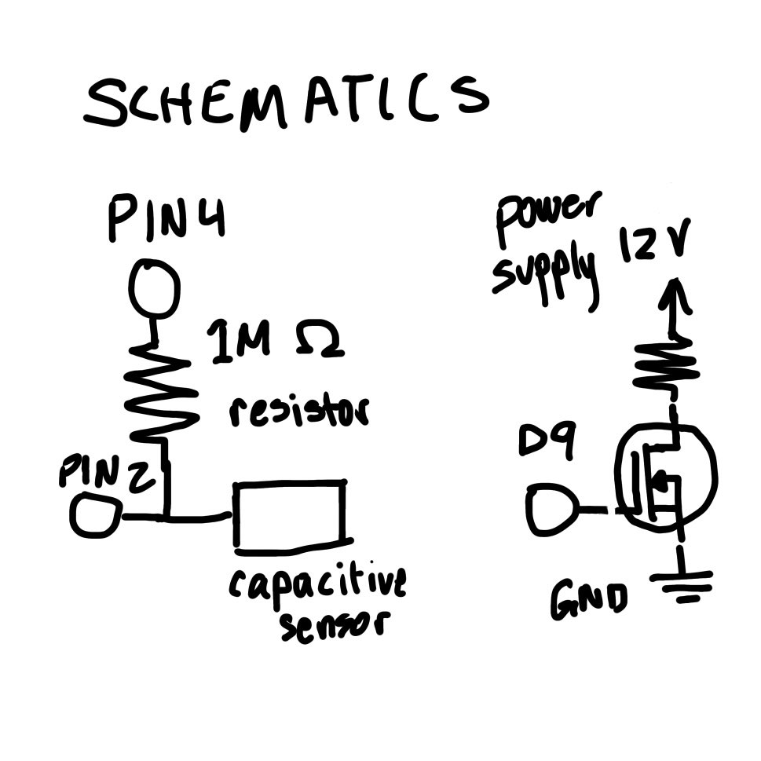
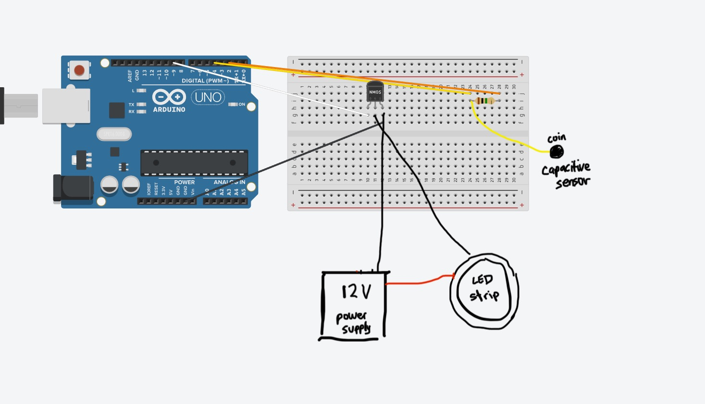
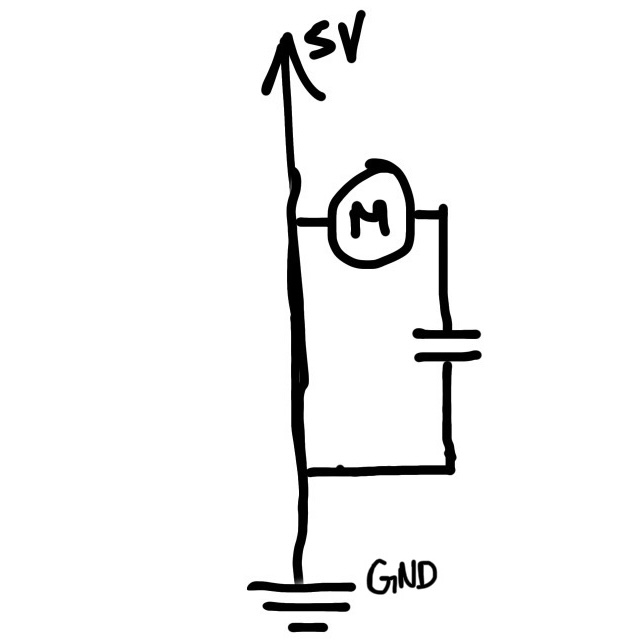

Circuit and Schematics

The sensor uses a 1M ohm resistor to activate when touched. There is an alligator clip attached to the 1M ohm resistor to connect a metal bracelet as a capacitive sensor.
Code Snippet
#include <CapacitiveSensor.h> // capacitive sensor library
CapacitiveSensor cs_4_2 = CapacitiveSensor(4, 2); // sensor between pins 4 and 2, pin 2 is sensor pin
int led = 9; // pin for n-mosfet gate for leds
int samples = 8; // number of samples to average to smooth capacitor data
int brightness = 0; // initialize led brightness
void setup() {
pinMode(led, OUTPUT); // set led as output
analogWrite(led, 0); // writes pin to be off
cs_4_2.set_CS_AutocaL_Millis(0xFFFFFFFF); // turns off autocalibration
Serial.begin(9600); // speed of sensor readings
}
long readAverage() { // function for averaging sensor readings to reduce noise
long sum = 0; // initialize sum
for (int i = 0; i < samples; i++) { // for number of samples
sum += cs_4_2.capacitiveSensor(30); // the sensor readings are added to sum
delay(5); // delay between readings
}
return sum / samples; // sum divded by number of samples
}
void loop() {
long val = readAverage(); // averaged value variable
Serial.println(val); // print averaged value
if (val > 300) { // if averaged value is greater than 300,
brightness = 255; // leds on
analogWrite(led, brightness); // writes led brightness
} else if (val < 180) { // if averaged value is less than 180,
brightness = 0; // leds off
analogWrite(led, brightness); // writes led brightness
}
delay(20); // delay for serial output
}Operation

Questions
This is the datasheet for the n-mosfet transistor: https://www.diodes.com/assets/Datasheets/DMT6009LCT.pdf. What is the absolute maximum amount of current between pins 2 and 3?
The absolute maximum amount of current between pins 2 and 3 is 37.2 A.
Draw a schematic for a circuit with using at least your arduino, a DC motor, a flyback diode, and capacitors between power and ground. Find parts with datasheets you could use for each of these schematic components.

Parts for schematic:
-Arduino Uno: https://octopart.com/a000066-arduino-21222240
-DC Motor: https://octopart.com/82860003-crouzet-42052
-Capacitor: https://octopart.com/eea-ga1c100-panasonic-18188462
Here is the datasheet for the L293D chip: https://www.ti.com/product/L293D. Draw a schematic using at least your arduino, this chip, and two motors. Write (pseudo) code that shows how you would move the motors both forward, both back, then one forward one back, and one back then forward.

set pin variables
set pin modes as outputs
digitalWrite(motor 1 "input" side, high)
digitalWrite(motor 1 "output" side, low)
write the same for motor 2 to move both forward
write the opposite for motors to move backwards
write motor 1 to be high, low
write motor 2 to be low, high to move motor 1 forwards, motor 2 backwards
write the opposite for motor 1 to move backward, motor 2 forwards
Did you use AI tools in completing this assignment?
No.